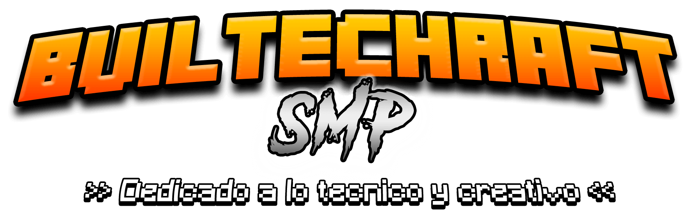

¿Qué es Builtechraft?
Builtechraft es un proyecto personal del jugador Tarquitet, un servidor privado del videojuego de Minecraft que se centra en diseñar y construir un mundo inspirado en la arquitectura y el arte con el fin de darle la libertad creativa que los miembros se merecen.